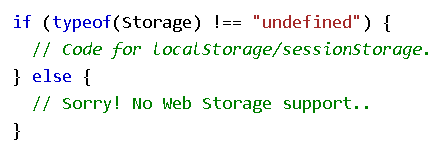
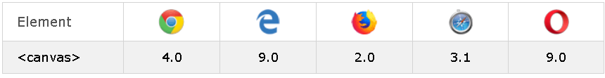

Un iframe se usa para mostrar una página web dentro de una página web.
Use los atributos height y width para especificar el tamaño del iframe.
No todas las páginas web permiten mostrarse con un iframe.
Por defecto, un iframe tiene un borde alrededor. Para eliminar el borde, agregue el styleatributo y use la border:none; propiedad CSS. Con CSS, también puede cambiar el tamaño, el estilo y el color del borde del iframe
Se puede usar un iframe como marco objetivo para un enlace. El target atributo del enlace debe referirse al name atributo del iframe
La forma más fácil de reproducir videos en HTML es usar YouTube. YouTube mostrará una identificación (como tgbNymZ7vqY), cuando guarde (o reproduzca) un video. Puede usar esta identificación y consultar su video en el código HTML.
Puede hacer que su video comience a reproducirse automáticamente cuando un usuario visite esa página agregando un parámetro simple a su URL de YouTube: "?autoplay=" Valor 0 (predeterminado): el video no se reproducirá automáticamente cuando se cargue el reproductor. Valor 1: el video se reproducirá automáticamente cuando se cargue el reproductor.
Una lista de videos separados por comas para reproducir (además de la URL original).
Bucle de YouTube Valor 0 (predeterminado): el video se reproducirá solo una vez. Valor 1: el video se repetirá (para siempre)
Controles de YouTube Valor 0: los controles del reproductor no se muestran. Valor 1 (predeterminado): la pantalla de controles del reproductor.
Nota: YouTube object y embed quedó en desuso desde enero de 2015. Debería migrar sus videos para usarlos iframe en su lugar.
La API de geolocalización HTML se utiliza para localizar la posición de un usuario. Como esto puede comprometer la privacidad, la posición no está disponible a menos que el usuario la apruebe.
Nota: La geolocalización es más precisa para dispositivos con GPS, como teléfonos inteligentes.
Nota: A partir de Chrome 50, la API de geolocalización solo funcionará en contextos seguros como HTTPS. Si su sitio está alojado en un origen no seguro (como HTTP), las solicitudes para obtener la ubicación de los usuarios ya no funcionarán.
El getCurrentPosition() método se utiliza para devolver la posición del usuario. El siguiente ejemplo devuelve la latitud y longitud de la posición del usuario.
El segundo parámetro del getCurrentPosition()método se usa para manejar errores. Especifica una función para ejecutar si no puede obtener la ubicación del usuario.
Para mostrar el resultado en un mapa, necesita acceder a un servicio de mapas, como Google Maps. En el siguiente ejemplo, la latitud y longitud devueltas se usan para mostrar la ubicación en un mapa de Google (usando una imagen estática).
coords.latitude: La latitud como un número decimal (siempre devuelto).
coords.longitude: La longitud como un número decimal (siempre devuelto).
coords.accuracy: La precisión de la posición (siempre devuelta)
coords.altitude: La altitud en metros sobre el nivel medio del mar (devuelto si está disponible)
coords.altitudeAccuracy: La precisión de altitud de la posición (devuelta si está disponible)
coords.heading: El rumbo en grados en sentido horario desde el norte (devuelto si está disponible)
coords.speed: La velocidad en metros por segundo (devuelta si está disponible)
timestamp: La fecha / hora de la respuesta (devuelta si está disponible)
El objeto de geolocalización también tiene otros métodos interesantes:
Arrastrar y soltar es una característica muy común. Es cuando "agarra" un objeto y lo arrastra a una ubicación diferente. En HTML5, arrastrar y soltar es parte del estándar: cualquier elemento puede ser arrastrable.
Para hacer que un elemento sea arrastrable, establezca el draggable atributo en verdadero. Luego, especifique qué debe suceder cuando se arrastra el elemento. El dataTransfer.setData()método establece el tipo de datos y el valor de los datos arrastrados. El ondragoverevento especifica dónde se pueden soltar los datos arrastrados.
Almacenamiento web HTML; mejor que las cookies. Con el almacenamiento web, las aplicaciones web pueden almacenar datos localmente en el navegador del usuario. Antes de HTML5, los datos de la aplicación debían almacenarse en cookies, incluidas en cada solicitud del servidor. El almacenamiento web es más seguro y se pueden almacenar grandes cantidades de datos localmente, sin afectar el rendimiento del sitio web. A diferencia de las cookies, el límite de almacenamiento es mucho mayor (al menos 5 MB) y la información nunca se transfiere al servidor. El almacenamiento web es por origen (por dominio y protocolo). Todas las páginas, de un origen, pueden almacenar y acceder a los mismos datos.
El almacenamiento web HTML proporciona dos objetos para almacenar datos en el cliente:
Antes de usar el almacenamiento web, verifique el soporte del navegador para localStorage y sessionStorage.
El objeto localStorage almacena los datos sin fecha de vencimiento. Los datos no se eliminarán cuando se cierre el navegador y estarán disponibles al día siguiente, semana o año.
La sintaxis para eliminar el elemento localStorage es: localstorage.removeItem("")
Contar la cantidad de veces que un usuario ha hecho click en un botón. No se reinicia ni con cargar de nuevo la página.
El sessionStorage objeto es igual al objeto localStorage, excepto que almacena los datos para una sola sesión. Los datos se eliminan cuando el usuario cierra la pestaña específica del navegador. Contar la cantidad de veces que un usuario ha hecho clic en un botón, en la sesión actual
Un trabajador web es un JavaScript que se ejecuta en segundo plano, sin afectar el rendimiento de la página. Al ejecutar secuencias de comandos en una página HTML, la página deja de responder hasta que finaliza la secuencia de comandos. Un trabajador web es un JavaScript que se ejecuta en segundo plano, independientemente de otros scripts, sin afectar el rendimiento de la página. Puede continuar haciendo lo que quiera: hacer clic, seleccionar cosas, etc., mientras el trabajador web se ejecuta en segundo plano.
Contadores:
El propósito de un complemento es extender la funcionalidad de un navegador web. Las aplicaciones auxiliares (complementos) son programas informáticos que amplían la funcionalidad estándar de un navegador web. Se pueden agregar complementos a las páginas web con la etiqueta object o la embed. Los complementos se pueden usar para muchos propósitos: mostrar mapas, buscar virus, verificar su identificación bancaria, etc.
El object elemento es compatible con todos los navegadores. Define un objeto incrustado dentro de un documento HTML. Se utiliza para insertar complementos (como applets de Java, lectores de PDF, reproductores Flash) en páginas web.
También se puede usar para incluir HTML en HTML. O imágenes si quieres
También define un objeto incrustado dentro de un documento HTML.
Lenguaje de marcado de hipertexto.
El elemento HTML canvas se usa para dibujar gráficos en una página web. Se utiliza para dibujar gráficos, sobre la marcha, a través de JavaScript. Es solo un contenedor para gráficos. Debe usar JavaScript para dibujar los gráficos. Canvas tiene varios métodos para dibujar trazados, cuadros, círculos, texto y agregar imágenes. Un lienzo es un área rectangular en una página HTML. Por defecto, un lienzo no tiene borde ni contenido.
Soporte de navegadores:
Lienzo vacio:
Dibujar una linea:
Dibujar un circulo:
Dibujar un texto:
Texto de trazo:
Dibujar degradado lineal:
Dibujar degradado circular:
Dibujar imagen:

El elemento svg es un contenedor para gráficos SVG. SVG tiene varios métodos para dibujar trazados, cuadros, círculos, texto e imágenes gráficas.
Soporte de navegador:

Circulo:
Rectángulo:
Rectángulo redondeado:
Estrella:
Logo:
SVG es un lenguaje para describir gráficos 2D en XML. Canvas dibuja gráficos 2D, sobre la marcha (con un JavaScript). SVG está basado en XML, lo que significa que cada elemento está disponible dentro del SVG DOM. Puede adjuntar controladores de eventos de JavaScript para un elemento. En SVG, cada forma dibujada se recuerda como un objeto. Si se cambian los atributos de un objeto SVG, el navegador puede volver a representar automáticamente la forma. El lienzo se representa píxel por píxel. En el lienzo, una vez que se dibuja el gráfico, el navegador lo olvida. Si se cambia su posición, se debe volver a dibujar toda la escena, incluidos los objetos que podrían haber sido cubiertos por el gráfico.
La siguiente tabla muestra algunas diferencias importantes entre Canvas y SVG:
| Canvas | SVG |
|---|---|
| Resolución dependiente. | Resolución independiente. |
| No hay soporte para controladores de eventos. | Soporte para controladores de eventos. |
| Pobres capacidades de representación de texto. | El más adecuado para aplicaciones con grandes áreas de representación (Google Maps). |
| Puede guardar la imagen resultante como .png o .jpg | Representación lenta si es compleja (cualquier cosa que use mucho el DOM será lenta). |
| Muy adecuado para juegos con gráficos intensivos. | No apto para aplicaciones de juegos. |
Los eventos enviados por el servidor permiten que una página web obtenga actualizaciones de un servidor.
Un evento enviado por el servidor es cuando una página web obtiene automáticamente actualizaciones de un servidor. Esto también era posible antes, pero la página web tendría que preguntar si había actualizaciones disponibles. Con los eventos enviados por el servidor, las actualizaciones vienen automáticamente. Ejemplos: actualizaciones de Facebook / Twitter, actualizaciones de precios de acciones, noticias, resultados deportivos, etc.
El objeto EventSource se usa para recibir notificaciones de eventos enviadas por el servidor.
El onopen se usa cuando una conexion al servidor se abre.
El onmmessage se usa cuando se recibe un mensaje.
El onerror se usa cuando ocurre un error.
El protocolo Open Graph permite que cualquier página web se convierta en un objeto rico en un gráfico social. Por ejemplo, esto se usa en Facebook para permitir que cualquier página web tenga la misma funcionalidad que cualquier otro objeto en Facebook.
Para convertir sus páginas web en objetos gráficos, debe agregar metadatos básicos a su página. Hemos basado la versión inicial del protocolo en RDFa, lo que significa que colocará meta etiquetas adicionales en head su página web. Las cuatro propiedades requeridas para cada página son: